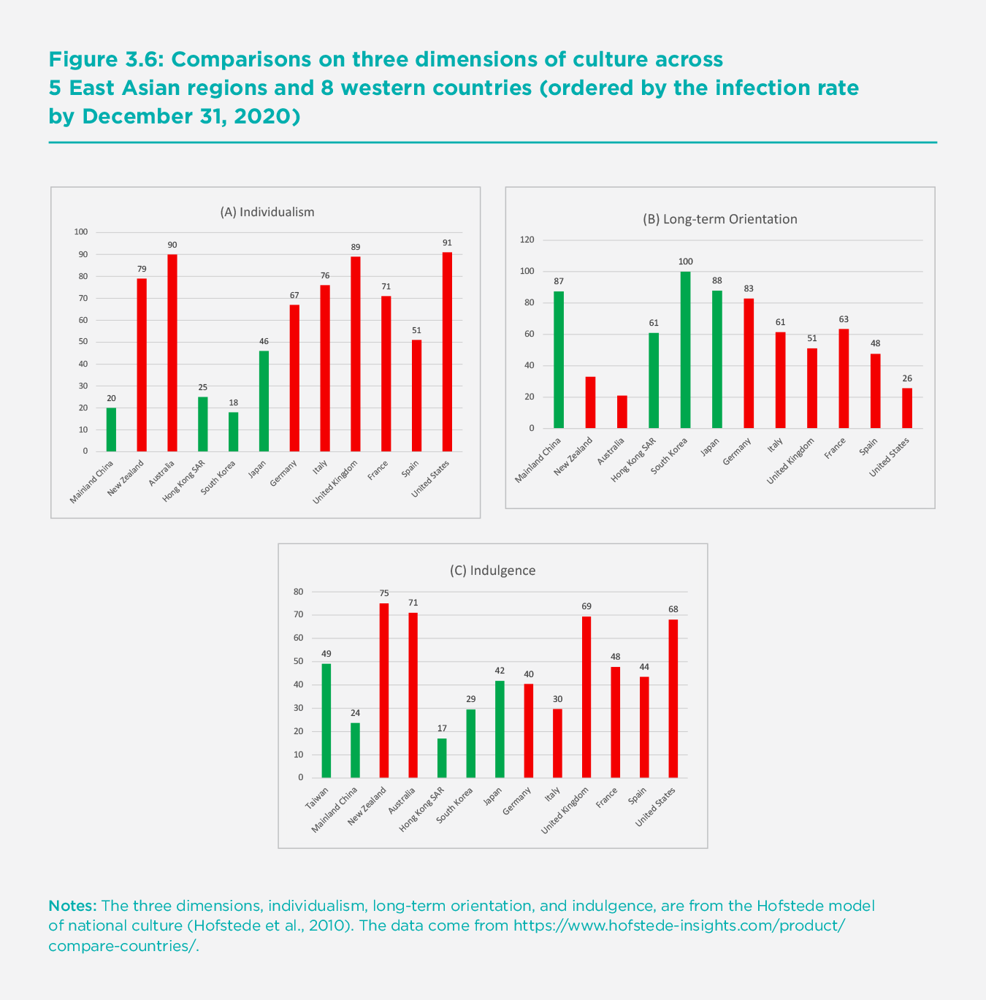
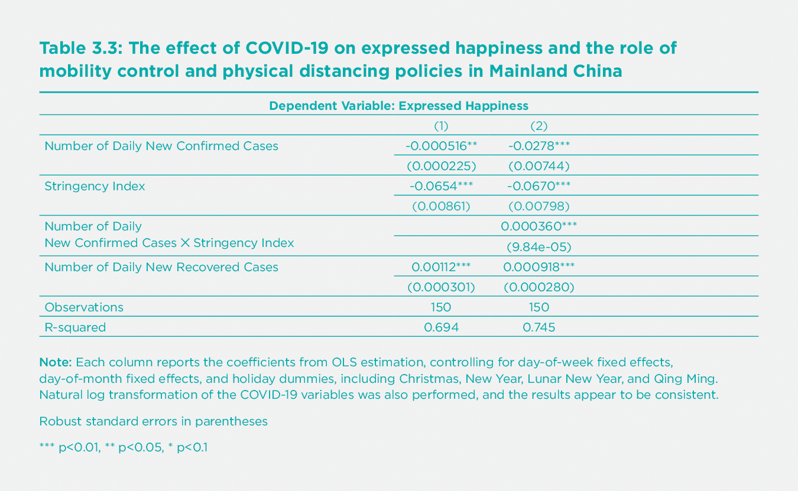

Introduction
COVID-19, which was first discovered and reported in Wuhan, China in December 2019, spread across the world at a fast and terrifying pace throughout 2020. The pandemic has affected many key aspects of life around the world. Government policies and personal behaviors in coping with the pandemic have varied greatly across countries and regions, and the resulting infection and death rates have differed correspondingly. In general, some countries in East Asia and the Pacific had better performance in containing the spread of COVID-19, compared to the rest of the world.
This chapter explores how the East Asian countries or regions (hereafter “East Asian regions,” for simplicity) have dealt with the pandemic and how both the infection and government policy have affected emotional well-being. Our study focuses on five regions: mainland China; Hong Kong SAR of China (hereafter “Hong Kong SAR”); Taiwan, China (hereafter “Taiwan”); South Korea; and Japan. We then compare the East Asian regions’ performance with a selected group of Western countries with large populations and economies, including: France, Germany, Italy, Spain, the United Kingdom, and the United States. We will also compare them with two Western countries located in the Asia-Pacific region, Australia and New Zealand, which have done quite well in controlling the spread of COVID-19.
Our analysis shows that East Asia’s success, compared with the six selected Western societies, can be attributed to stronger and more prompt government responses, as well as better civic cooperation. In particular, East Asian governments implemented more stringent mobility control and physical distancing policies, as well as more comprehensive testing, tracing, and isolation policies (except for Japan) since the early stages. The weaker policies in Japan are associated with the worst performance in containing COVID-19 among the five East Asian regions.
A detailed summary of the policies in the five East Asian regions shows the importance of restructured and strong government response systems in providing the necessary institutional infrastructure for effectively enforcing control measures. It is also essential to have multi-pronged strategies and comprehensive use of mobility restrictions combined with other interventions. In addition, as the pandemic continues across the globe, East Asian governments have built up the capacity of their public health systems, and they have explored dynamic response protocols that are more targeted and sustainable in their prevention of major resurgences. Specifically, proactive screening, rapid government response to local outbreaks, and extensive testing, tracing, and isolation measures have been the pillars of COVID-19 control mechanisms in these countries, aiming for a swift resumption of normal life alongside the virus, i.e., the “new normal.” We also show that the early success of government policies in the East Asia regions in combating COVID-19 is similarly found in Australia and New Zealand. These successes have shown that effective virus control policies can be implemented in more typical Western democracies.
In addition to rapid and systematic government responses, citizens in East Asia (except for Japan[1]) were generally more compliant with government mandates for mask-wearing, improving personal hygiene, and maintaining physical distance than citizens in the selected Western countries. We argue that certain cultural traits (defined in Hofstede’s model of national culture), such as being less individualistic, more long-term oriented, and less indulgent may help to explain the more self-regulated behavior and greater compliance with government policies in East Asia.[2] However, these cultural tendencies alone are not indispensable for controlling the pandemic. The successes of Australia and New Zealand suggest that even in countries with more individualistic, short-term oriented, and more indulgent citizens, a responsible government still can implement very effective policies to contain the spread of COVID-19.
Finally, we examine the impact of COVID-19 and mobility control and physical distancing policies on emotions. We find individual emotions to be significantly impacted by COVID-19 in East Asia. An increase in daily new confirmed cases is associated with a lower level of publicly expressed happiness in mainland China, and a higher level of negative affect in the other four regions. Mobility control and physical distancing policies are found to play an important role in people’s well-being, as they can largely offset the decrease in happiness that occurs due to the rise in the daily new confirmed cases. In summary, more stringent government responses not only reduce the spread of COVID-19, but also help to buffer the negative impact of new daily infection rates on emotions in East Asia.
Some countries in East Asia and the Pacific had better performance in containing the spread of COVID-19, compared to the rest of the world.
An overview of COVID-19 in East Asia
COVID-19 in East Asia
We first present the dynamics of infection in the five East Asian regions. In Figure 3.1, the left axis shows new infections, and the right axis shows total infections. Panel A illustrates the dynamics in mainland China, where the COVID-19 virus was first discovered and reported. Figure 3.1 shows that new cases in mainland China started to increase rapidly in early January, and reached a peak on February 12, with 14,106 cases reported. New cases then declined to fewer than 1,000 on February 19, and further fell below 500 at the beginning of March. New case rates have since remained at a very low level. From the lockdown of Wuhan on January 23, it took about two months to reduce local community infection cases below 100 and almost fully contain the spread of COVID-19 in mainland China: The total amount of infections rapidly increased from late January 2020 to over 80,000 cases on March 1, but then remained flat until the end of December 2020.
We report the quantity of new infections for the period March 1 to December 31 in Appendix Figure 1, as new infections are too infrequent to be displayed clearly in Figure 3.1. There are two curves in the figure, one for total daily new infections and another for the new infections imported by visitors from outside mainland China. A few small bumps can be found in April, which are mainly caused by imported cases. The bumps around April 17, June 14, and July 31 were due mainly to local outbreaks, which were all contained within approximately one month. In most days, the new infections were largely due to imported cases.
The dynamics of infections in Hong Kong SAR are reported in Panel B. New infections remained low until early March 2020 with a peak in late March. The infection was then largely controlled until another peak emerged on July 22, but the curve was compressed in about two weeks. The infection rate remained low until mid-November, followed by a small bump starting in late November. The curve for total infections clearly shows three periods of rising infections in March, July, and November. The total cumulative infections were still below 9,000 at the end of December 2020.
Infections in Taiwan, as shown on Panel C, have been very low for the whole study period. New infections were mainly recorded in the second half of March and early December. The peak of 27 infections was observed on March 20. The total cumulative number of infections was just 799 by December 31.
South Korea has experienced three waves of infections. The first two waves were largely related to indoor religious activities and political assemblies organized mainly by religious groups.[3] The first wave occurred from late February to early March, and the second wave took place in late August. The infection rate of the second peak was 441 new cases on August 26, which was much lower than the first peak of 851 cases on March 3. For most days between the peaks, new infections were successfully controlled with a rate below 100 cases per day. The third wave recorded higher infections than the first two waves and lasted longer as a result of more scattered infections in metropolitan areas. On December 31, the total amount of infections reached 61,769, which is more than double the amount of infections at the beginning of the third wave.
Japan has also experienced three waves of infections. The first peak was in mid-April, with 701 new cases on April 11. The second peak was in late July and early August, with 1,762 new cases on July 30, and the third peak had not yet arrived by until December 31, when the highest daily cases exceeded 4,500. The number of infections at the three peaks are much higher than those in other East Asian regions. The total number of infections was over 230,000 on December 31.
Comparisons with Western Countries
This section compares the infection rates observed in the five East Asian regions to six Western countries: France, Germany, Italy, Spain, the United Kingdom, and the United States. These Western nations offer a useful comparison because of their relative size and income level in the Western sphere. We use the per capita rates of infection to account for population size and to enable easier comparisons across countries and regions, as larger nations may have higher infection counts due to the size of their population. Panel A of Figure 3.2 shows the cumulative daily confirmed cases per 100,000 people in the five East Asian regions. In the early stage (January and February), mainland China recorded the highest infection rate, mainly due to the outbreak in Wuhan and other cities in Hubei province. China’s infection rate was surpassed by South Korea in late February, Hong Kong SAR in late March, and then Japan in mid-April. The infection rate in Taiwan was the lowest among the five regions for most of this period, reaching 3.3 per 100,000 on December 31. The infection rate in mainland China has been the second lowest since mid-April, with the highest rate of infection at 6.1 per 100,000 on December 31. The infection rates in Hong Kong SAR and South Korea were similar at the end of 2020, with 117 and 120 per 100,000 respectively. Japan’s infection rate started to increase rapidly beginning in mid-July, and the country recorded 186.4 per 100,000 by the end of the year.
Even though Japan seems to have a high number of infections in comparison to other East Asian peers, Japan’s infection rates are much lower than many Western countries, as shown in Panel B of Figure 3.2. The recorded infection rates in France, Germany, Italy, Spain, the United Kingdom, and the United States remained low until the end of February, but they started to rise rapidly in March and April. Italy and Spain’s infection rates rose above 100 per 100,000 on March 23 and March 25, respectively. The remaining four countries reached 100 per 100,000 about two weeks later. The infection rate in Spain on March 30 (188 per 100,000) was already higher than the highest infection rates in East Asia (i.e., Japan) by the end of 2020.
All six countries, which rank top in population size and income level in the western sphere, have recorded high growth rates of infections, particularly since October. The infection rate in Germany was the lowest among the six countries and increased at the lowest speed, but the infection rate in Germany at the end of the year was 2,101 per 100,000, which is still about 11 times the rate of Japan. Italy and the United Kingdom recorded higher infection rates, with 3,485 and 3,677 per 100,000 respectively. Spain and France had even higher rates, both over 4,100 per 100,000. The United States departed from other countries, with an almost linear increase in the infection rate up to 2,760 per 100,000 in late October. The U.S. infection rate increased at an even higher rate until it reached 6,060 per 100,000 by the end of 2020. The unique trend of the infection rate in the United States may imply that very limited effective anti-COVID-19 measures were adopted. By the end of 2020, the infection rates of the six selected Western countries were about 11 to 32.5 times the rate of Japan, and 340 to 991.6 times the rate of mainland China.
To provide some middle ground between the five East Asian economies and the six selected Western economies, we have added the infection rates in Australia and New Zealand in both panels of Figure 3.2. These are countries which adopted COVID-19 control strategies very similar to those employed in the five East Asian regions. Their results are considerably better than the other Western countries shown in Panel B and are much more comparable to those for the five countries in Panel A. Australia and New Zealand’s relative curves in Panels A and B reveal the striking difference in infection between East Asia and the six Western countries.
Government responses
Governments across the world have gradually adopted a wide range of measures in response to the COVID-19 outbreak. In this section, we first compare the government responses of the five East Asian regions with those of six Western countries, including the early stages of the outbreak and the subsequent waves. Second, we summarize the similarities and differences of the response systems and the non-pharmaceutical and pharmaceutical interventions adopted by the five East Asian governments to demonstrate successful responses that other countries can draw upon for their own responses. We also discuss government responses to the COVID-19 pandemic in Australia and New Zealand and point out the possibilities for Western countries.
An overall picture
To compare the government responses in East Asian and Western regions, we rely on information from the Oxford COVID-19 Government Response Tracker (OxCGRT), which collects publicly available information for 17 indicators of government responses from more than 180 countries. We focus on the stringency index, which consists of nine indicators of policies whose primary goal is to restrict people’s mobility and behaviors. Indicators include school closures, workplace closures, public event cancellations, restrictions on gatherings, public transport closures, stay-at-home requirements, restrictions on internal movement, international travel controls, and public information campaigns. The index is an additive score of the nine indicators measured on an ordinal scale, rescaled to vary from 0 to 100 (100 = strictest).[4] We acknowledge that this stringency index, though simple for international comparison, may not provide enough detail for each of these policies in mobility control and physical distancing. More detailed policies in the five East Asian regions will be discussed in the following subsection. This index may also not fully represent the effectiveness and efficiency of the policies, since neither actual enforcement, civic engagement, nor individual compliance is covered by the index.
The success in East Asia and the Pacific points to the importance of strong government leadership and the use of rigorous non-pharmaceutical and pharmaceutical measures in fighting the COVID-19 pandemic.
Figure 3.3 shows the stringency index for the five East Asian regions and the six Western countries from December 31, 2019 to December 31, 2020. We also indicate the level of the stringency index for each region when the 10th, 100th, or 1,000th COVID-19 case was confirmed.[5] The left axis corresponds to the stringency index, and the right axis corresponds to daily new confirmed cases. Although the governments of most of the 11 regions implemented quite stringent policies in mobility control and physical distancing when the COVID-19 situation became more severe, we find that the stringency of these policies varied significantly at the early stages across these regions. The governments of Hong Kong SAR, Italy, and Taiwan responded the fastest to the outbreak among all the regions; when the 10th case was confirmed, their stringency indexes were already 49, 28, and 19, respectively. It seems that the strictness of the government responses in Hong Kong SAR and Taiwan at the earliest stage of the outbreak helped to reduce the spread of the virus in these two regions. Despite the comparably stringent policies at this early stage, the relatively poor performance of Italy in containing the virus may be attributable to less compliance with those policies or insufficient and inconsistent testing, tracing and quarantine[6].
On the other extreme, the governments of Germany, Spain, the United States, and the United Kingdom were among the slowest to respond: their stringency indexes were only 25, 25, 22, and 11 respectively when the 1,000th case was confirmed in each country even though the indexes rose substantially right after that. Weak government responses in these countries at the early stages inhibited them from preventing the rapid spread of the virus. The governments of mainland China, Japan, South Korea, and France had relatively weak policies when the 10th case was confirmed but raised the strictness of mobility control and physical distancing measures considerably when the 100th or 1,000th case was confirmed. Overall, the governments of the five East Asian regions implemented stricter interventions than those of the four western countries including Germany, Spain, the United States and the United Kingdom at the earlier stages of the outbreak. This helps to explain the relatively mild first waves in the East Asian countries.
Testing and contact tracing also appeared to be effective in managing COVID-19, alongside early adoption of mobility control and physical distancing policies. Each of the five East Asian regions and the six Western countries offered comprehensive testing, such as testing of anyone showing COVID-19 symptoms or open public testing. When the situation got much worse (i.e., having more than 1,000 cases confirmed), some countries offered more extensive testing than others at earlier stages. France and the United States did not have any testing policies when the 10th case was confirmed, while all of the five East Asian regions and the other four Western countries offered testing to those who both had symptoms and met certain criteria (e.g., essential workers, admitted to hospital, came into contact with a known case, and returned from overseas). When the number of confirmed cases reached 100, France and the United States began to implement testing policies, whereas three of the East Asian regions — Hong Kong SAR, Taiwan, and South Korea — broadened the criteria for testing at this stage. Hong Kong SAR and Taiwan offered testing to anyone showing COVID-19 symptoms, and, most impressively, South Korea offered open public testing to asymptomatic people.
Another strength of most of the East Asian regions is their much more aggressive contact-tracing efforts. Table 3.1 presents the comprehensiveness of contact tracing in each of the 11 regions at various stages of the outbreak. It shows that four out of the five East Asian regions (mainland China, Hong Kong SAR, Taiwan, and South Korea) implemented comprehensive contact tracing at the early stages and continued making their efforts later (even when the situations improved). There is more heterogeneity on contact tracing among the six Western countries. The governments of Italy, Germany, and the United Kingdom made great efforts for contact tracing at the early stages, but the policies were loosened after more than 1,000 cases were confirmed. The time periods during which these three countries loosened their contact tracing policy unfortunately coincided with periods in which daily new confirmed cases surged. However, the United States only had very limited contact tracing and did not conduct tracing for all identified cases throughout the whole time period under investigation. Japan, France, and Spain did not practice contact tracing for all identified cases until the total number of confirmed cases reached nearly 120,000, 178,000, and 890,000, respectively.
Most of the regions experienced a second and third wave of the COVID-19 pandemic after the spring. When these subsequent waves arrived, Hong Kong SAR, South Korea, and Japan responded quickly by raising the stringency of mobility control and physical distancing policies. In mainland China and Taiwan, there have been no significant subsequent waves mainly because of consistent comprehensive testing, contact tracing, and quarantine policies that quickly and fully suppressed some regional outbreaks.[7] On the other hand, France and the United Kingdom did not enforce stricter mobility control and physical distancing measures quickly enough when subsequent waves hit. The United States did not significantly raise the stringency of control measures until mid-November when the situation became most severe. Overall, the lack of government responses regarding mobility control and physical distancing policies in these Western countries during subsequent waves partly explains why they experienced much stronger waves than the East Asian regions.
All of the East Asian regions, except Japan, have made testing available to the general public. In comparison, only three out of the six Western countries — France, Germany, and the United States — had similar levels of testing when the second wave arrived. Italy, Spain, and the United Kingdom continued to only test those with symptoms. None of the Western countries have conducted contact tracing as thoroughly as the four East Asian regions (not including Japan). Overall, the success of the East Asian regions in controlling subsequent waves is mainly attributable to the timely enforcement of more stringent policies for mobility control and physical distancing, together with continued extensive testing and comprehensive contact tracing.
The success stories in battling the COVID-19 pandemic have not only taken place in East Asia. Australia and New Zealand, two Western countries located in the Asia-Pacific region, appear to be successfully suppressing the pandemic. As shown in the two panels of Figure 3.4, both countries enforced strong mobility control and physical distancing policies, similar to the East Asia regions; the stringency index was already about 19 and 36 when the 10th cases were confirmed in Australia and New Zealand, respectively. These levels of stringency were higher than those of not only most of the other Western countries, but some of the East Asian regions under study at the earliest stage of the outbreak. The policies also became rapidly stricter in response to the rise in new confirmed cases, especially in New Zealand. Furthermore, the level of stringency of the policies was raised immediately wherever subsequent infections appeared to hit the two countries. These restrictions were directly aimed at the locality subject to new infections. Australia and New Zealand also had comprehensive contact tracing policies (i.e., doing contact tracing for all identified cases) from the very beginning of the outbreak.
A closer look
East Asian governments have adopted control and mitigation measures that were found to be effective in combating the COVID-19 pandemic, enabling a swift resumption of normal life without severe resurgence of infections. Restructured and strong government response systems, early and rigorous mobility control, extensive screening, testing, contact tracing and isolation, coordinated resource allocation, clear communication, enforced self-protection practices, and supportive economic measures have jointly contributed to the comparatively low COVID-19 rates in the East Asian regions.[8] In addition, as COVID-19 continued to spread globally, these regions have built up their capacities and explored sustainable response protocols that are more targeted and proactive in the prevention and control of COVID-19 outbreaks, as well as rejuvenating their economies.[9]
Response systems
Fostered by the experience with previous epidemics such as Severe Acute Respiratory Syndrome (SARS) and Middle East Respiratory Syndrome Coronavirus (MERS), all of the five East Asian governments, except Japan, have improved their crisis management systems and established relevant regulatory procedures to address public health emergencies.[10] Though legal and policy bases for the public health systems need further strengthening,[11] strong nationwide directives, multi-departmental coordination, and collaboration between different levels of government in these East Asian regions have provided the institutional infrastructure for aggressive and/or timely response to the COVID-19 pandemic. [12]
Mainland China
Despite the delayed response to the outbreak in its very early stage,[13] a “whole-of-government” and “whole-of-society” approach was subsequently followed. On January 24, 2020, the State Council of China established the Joint Prevention and Control Mechanism (the Mechanism) which consisted of 32 departments of the government. The Mechanism, led by the National Health Commission, played a crucial role in coordinating collective actions and facilitating cooperation for, “epidemic prevention and control, medical treatment, scientific research, publicity, foreign affairs, logistics support, and frontier work.”[14] Within five days of January 24, 31 Chinese provinces, municipalities, and autonomous regions declared a Level I (the highest level) response to the COVID-19 epidemic. At the local level, the Epidemic Prevention and Control Headquarters System was launched for leading and commanding the response and mobilization of community engagement.[15]
Taiwan & Hong Kong SAR
Both regions benefitted from the legacy of the SARS epidemic and were able to activate public health emergency management mechanisms in response to the COVID-19 outbreak from its onset.[16] For example, on January 20, 2020, the Taiwan Centers for Disease Control (TCDC) activated the Central Epidemic Command Center (CECC) under the National Health Command Center (NHCC), with the minister of health and welfare as the designated commander. CECC coordinated the response efforts of multiple government departments in Taiwan, such as Ministries of Labor, Economics, Transportation, and Education.[17] As early as January 4, the Hong Kong SAR government launched the Preparedness and Response Plan Novel Infectious Disease of Public Health Significance (the Plan) and activated the “Serious Response Level,” which was then raised to “Emergency Level” on January 24. Under the Plan, a Steering Committee, consisting of directors and permanent secretaries of multiple departments of the government, was formed.[18]
South Korea
To coordinate the government-wide response to the COVID-19 pandemic, the South Korean government assembled the Central Disaster and Safety Countermeasures Headquarters, which consisted of multiple relevant ministries and was headed by the Prime Minister. The Korean CDC led the prevention and control efforts under the Headquarters, with assistance from the Minister of Health and Welfare and the Minister of Interior and Safety, to coordinate among the central and local governments. Local Disaster and Safety Management Headquarters were established at the local level with support from the central government for necessary resources.[19]
Japan
On January 30, 2020, three days after the Prime Minister declared COVID-19 as an infectious disease, Japan established the Novel Coronavirus Response Headquarters, with a task force consisting of 36 senior officers from different key ministries. However, the authority of both the task force and the Japanese government to implement epidemic countermeasures was greatly restricted by the Constitution.[20] Even with further amendments of the emergency law later in March, the governments still lacked superseding emergency power over ministries and stood in need of support for multisectoral and central-local collaboration for COVID-19 responses.[21]
Non-pharmaceutical interventions
Mobility restriction and physical distancing
Measures to control mobility and physical distancing were widely adopted, but the extent and intensity of these measures varied among the five East Asian regions. Dynamic and incremental control measures were also introduced in these regions in response to new outbreaks and resurgence.
Mainland China
Mainland China introduced comprehensive and rigorous interventions to control mobility and physical distancing.[22] The epicenter, Wuhan city, implemented a complete lockdown which lasted for 76 days beginning on January 23, followed by lockdowns in other prefectures in Hubei province beginning the next day. Unprecedented mobility control measures, including travel bans, suspension of public transport, bans of all public gatherings, cancelling of public events, strict stay-at-home requirements, and lockdowns of communities were instituted. Mobility restrictions and physical distancing policies were also adopted early in the rest of China.[23] For example, cross-regional travel restrictions, health checkpoints, rules for public gatherings, and stay-at-home orders were mandated in most areas during the Spring Festival. Schools of all levels remained closed until June, and workplace closures and community lockdowns were strictly enforced in high-risk areas. Although their proportionality was controversial, the drastic measures that characterized the Phase I containment efforts of mainland China were shown to have been effective in delaying and reducing the size of epidemic in China.[24] The prolonged interventions in Wuhan, and the gradual relaxation of mobility control and physical distancing measures, instead of a sudden and premature lifting, also helped prevent early resurgence.[25]
When the initial outbreak was suppressed, the COVID-19 response strategy of mainland China shifted to Phase II containment.[26] To prevent importation of cases from overseas, international travel restrictions were tightened in March 2020.[27] In addition, testing and disinfection requirements for imported cold-chain foods were enhanced, according to the plan of “full-chain, closed-loop, traceable management” introduced by the Mechanism.[28] Dynamic control measures were refined by local governments and tailored to risk levels of COVID-19 infections (high vs. medium vs. low risk). These measures were targeted to contain outbreaks promptly at a scale as granular as the community level while the country worked hard to revive socioeconomic life. For example, to avoid large-scale lockdowns, outbreaks in Beijing, Qingdao, Shanghai, and other mainland cities were quickly identified and suppressed within less than a month by tightening mobility control measures on the community level.
Hong Kong SAR and Taiwan
These neighbors of mainland China adopted targeted mobility control measures rather than regionwide lockdowns. One reason for their success at keeping COVID-19 under control is their early, incremental, and stringent border control.[29] For instance, Taiwan started onboard quarantine of passengers from Wuhan as early as December 31, 2019. In all three regions, entry of Wuhan residents and all foreign nationals were banned in late-January and mid-March respectively, with a health declaration and 14-day quarantine mandated for inbound travelers. Imported cases were greatly reduced by these border control measures. In Hong Kong SAR, testing for COVID-19 was required and administered at the airport for inbound travelers from high-risk areas or who were symptomatic. Other physical distancing measures, including school closures, work-from-home requirements (for civil servants in Hong Kong SAR), closing of leisure venues, reducing the capacity of restaurants, and restricting public gatherings were also introduced incrementally later in response to accelerating risk of local transmission.[30]
South Korea
South Korea avoided full lockdowns and had less restrictive border controls than Taiwan and Hong Kong SAR. While the Korean government banned the entry of foreigners with a travel history to Hubei on February 4, 2020, its border remained relatively open. However, South Korea instituted rigorous screenings at the border including requirements of health declarations, testing, and quarantine for inbound travelers. When potential new outbreaks emerged, measures including physical distancing, limitations on public gatherings, closure of public schools, churches, and nightclubs, and working-from-home recommendations were also introduced or tightened.[31] In particular, starting in June, South Korea adopted a 3-stage physical distancing system and implemented control measures according to the severity of COVID-19 infections,[32] which were recently further refined and modified at local levels.
Japan
The Japanese government did not implement comprehensive and intense mobility control measures such as lockdowns due to the constitutional restrictions. The countermeasures of the Japanese governments were targeted at border control and the quarantine of the Diamond Princess (the cruise ship with suspected/confirmed cases anchored at Port of Yokohama) at the early phase of the outbreak. Subsequent amendments to the law made it possible to declare a “state of emergency” in several prefectures and at the national level. Nevertheless, most mobility restrictions and physical distancing measures were still voluntary rather than mandatory. Central and local governments in Japan therefore only made appeals to the public, and they requested school closures, remote-working of non-essential business employees, and avoidance of public gatherings in multiple prefectures.[33] While there is some evidence that supports the effectiveness of the non-enforced requests in reducing the spread of COVID-19 in Japan,[34] critics also noted that the lack of clear incentives delayed behavioral changes in the early phase of the pandemic. [35]
Testing
Testing was the cornerstone public health measure for controlling the COVID-19 epidemic, as it was essential in preventing and containing resurgence in COVID-19 cases. Although testing capacities increased over time, testing policies varied in terms of availability and scale in the five East Asian regions.
Mainland China, Hong Kong SAR, Taiwan and South Korea
These regions aimed for extensive testing by aggressively increasing public access to COVID-19 tests. For example, despite initial short supply and slow turnaround, mainland China offered free testing services to potential COVID-19 patients beginning in late January and introduced affordable COVID-19 tests to the general public in April. More recently, testing was made free and required on a regular basis for high-risk groups, essential workers, and imported products, which helped proactively screen and contain COVID-19 infections. In Hong Kong SAR, through multiple testing and surveillance programs, free testing for COVID-19 was made available to people with symptoms at public and private clinics and hospitals, as well as for inbound travelers, inpatients, and healthcare workers. On May 23, 2020, Taiwan CECC also lowered restrictions on testing, as they allowed the general public to take COVID-19 tests at their own expense for emergency reasons, or for work, study, and travel purposes. The “testing, tracing, treating” model for containing COVID-19 was adopted by South Korea, whose testing capacity was greatly enhanced after the MERS outbreak in 2015. With cooperation between the government and the private sector, South Korea was able to conduct large-scale and rapid testing at the onset of the COVID-19 pandemic by setting up triage centers and innovations such as the “Drive-through/Walk-in” testing approach. Testing was free to confirmed cases and potential contacts but available to all in need of a test. Moreover, in later stages, rapid population-level mass testing for COVID-19 has been conducted in a number of cities across China such as Beijing, Wuhan, Qingdao, Dalian, and Hong Kong SAR, as well as in South Korea, allowing for rapid identification of clusters and resurgence of COVID-19 to avoid the second wave of massive infection.
Japan
Testing was targeted rather than extensive in Japan as compared to the other East Asian regions. Testing services were only available to people with potential symptoms, close contacts of confirmed cases, and inbound travelers. Testing costs were covered by the government or health insurance for confirmed cases. Until August 2020, although testing was widely used for cluster identification, testing capacity was still low in Japan and restrictions remained high. Often, requests for testing by clinicians were rejected by bureaucrats at local healthcare centers.[36]
Tracing
Extensive tracing of COVID-19 cases and close contacts were introduced and enhanced by the use of big data and information technologies in all of the East Asian regions except Japan. Large-scale contact tracing was shown to play an important role in suppressing local epidemics and enabling rapid government response to prevent resurgence.[37]
Mainland China, Hong Kong SAR, Taiwan and South Korea
In these regions, comprehensive and rapid epidemiological investigations were conducted in communities, hospitals, and triage centers for tracing potential COVID-19 patients. Extensive tracing was aided by the use of big data from surveillance infrastructure, border controls, medical records, and transportation systems, as well as mobile GPS and transaction records. Mainland China launched nationwide individual risk assessment services, called health barcodes, which utilized big data from multiple sources and machine learning algorithms.[38] Taiwan integrated data from mobile GPS, immigration and customs, health insurance, and health declaration at entry to screen and trace potential patients.[39] South Korea also made use of card transactions and surveillance data, as well as mobile phone apps (“Self-Quarantine Safety Protection App” and “Self-Diagnosis App”) for tracking.[40] In Hong Kong SAR, Taiwan, and South Korea, wristbands paired with mobile phones were also used as “electronic fences” to track people under quarantine. Moreover, mobile phone apps that map COVID-19 cases were developed in these regions to help people avoid areas of infection.
Japan
Japan adopted a contact tracing strategy that was targeted for early clustering identification. However, Japanese authorities had limited access to personal information other than that from confirmed cases. The download of tracking apps was also voluntary. Therefore, contact tracing and screening in Japan were not as extensive as in other regions, and often failed when clusters became large and widespread.[41]
Isolation and quarantine
Case isolation was important in controlling COVID-19 outbreaks and more effective when combined with contact tracing and physical distancing measures. All of the East Asian regions enforced mandatory and monitored isolation and quarantine for confirmed COVID-19 cases, suspected cases, close contacts, and inbound travelers, though with varying requirements for isolation venues.
Mainland China
Institutional isolation of all confirmed and suspected cases, and centralized quarantine of close contacts and inbound travelers, were required. Under institutional quarantine or isolation, living necessities, triage, basic medical care, frequent monitoring, and rapid referrals were provided.[42] Recent evidence suggests that institutional isolation was more effective than home-based isolation in reducing within-household and community transmission.[43]
Hong Kong SAR, Taiwan, South Korea and Japan
Unlike in mainland China, both home-based and institution-based quarantine were allowed in different circumstances. For example, in Hong Kong SAR, inbound travelers were subject to a 14-day self-quarantine at home or at designated quarantine centers, while institutional quarantine was required for close contacts of inbound travelers who tested positive.[44] Either home-based or institutional isolation were required for close contacts of COVID-19 cases in these regions, where home-based isolation was monitored electronically or physically by community workers. In particular, fines and/or imprisonment were enforced in Hong Kong SAR,[45] Taiwan,[46] and South Korea[47] for non-compliance with isolation requirements.
Resource allocation and mobilization*
In the five East Asian regions excluding Japan, allocations of medical and non-medical resources were coordinated across regions, prioritized for the frontline and for the treatment of severe COVID-19 patients, and facilitated by the use of information technology and partnership between government and private sectors.
Mainland China and Hong Kong SAR
The Chinese government boosted the domestic production of medical products through a host of supporting measures, such as providing tax reductions, subsidies, and social security benefits. International procurement of medical supplies by governments and private firms (e.g., tech giant Alibaba) was coordinated to help meet local needs. The government also promoted the import of medical products from overseas and shift of sales from export to domestic markets by local firms and encouraged manufacturers to reconfigure production lines to produce medical equipment. Health workers from the military and other provinces were paired with and sent to cities at the epicenter in Hubei, Hong Kong SAR, as well as to cities with resurgence. Medical resources were also concentrated through temporary redistribution systems to frontline workers. In addition, makeshift hospitals were established for separately treating patients with mild and severe conditions. Local governments, community workers, volunteers, and private sector entities, such as e-commerce platforms and logistic firms, worked together for distribution of vital products.[48]
Taiwan and South Korea
Domestic supply of face masks and PPE in Taiwan and South Korea was enhanced by banning the export of N95 (or similar standard, such as KF94 in South Korea) and surgical masks, the requisition of domestically produced face masks, and the expansion of production lines. In South Korea, the initial epicenters Daegu and Cheongdo were designated as “special care zones” in order to allow more resources to be allocated there. In addition, a national-level coordination center was set up in South Korea to allocate COVID-19 patients to hospitals and across regions.[49] Coordinated supply of resources was also made possible by the use of information technologies. Both Taiwan and South Korea introduced face mask rationing and distribution systems based on health insurance information. The Taiwanese health insurance administration and private developers also cooperated in providing real-time information about the availability of face masks on a “Mask Map.”
Japan
In contrast to other East Asian regions, Japan has a regionalized public health system. In response to the COVID-19 pandemic, Japan expanded its hospital networks and restructured the triage pathway at local levels. However, local health systems still lacked adequate redistribution of resources and national support.[50]
Communication
In mainland China, Taiwan, South Korea, and Japan, public information campaigns provided consistent and clear messages about government response efforts, guidelines, the risks of COVID-19, and self-protection measures, while the government in Hong Kong SAR was equivocal with regard to the use of protective face masks at the early stages of the outbreak.[51] Both traditional and social media were used to facilitate communication efforts and trust in government, though these efforts were less successful in Hong Kong SAR and Japan.[52] Efficient and timely case reporting systems were also crucial for the public health response and behavioral changes. Daily reporting and release of COVID-19 data was timelier in mainland China (despite its early failure in transparency), Hong Kong SAR, Taiwan, and South Korea than in Japan, where data sharing and reporting between different stakeholders and prefectures was delayed due to manual data entry systems and the norm of using fax machines and paper.[53]
Self-protection practice
In these East Asian regions, strict self-protection measures were either requested or mandated. For example, wearing a face mask was only requested on public transportation and at hospitals in Japan, while it was required in mainland China, Taiwan, Hong Kong SAR and South Korea, where non-compliance might lead to rejection of services.
Economic support
All five East Asian governments implemented supportive fiscal measures such as tax cuts, subsidies, wage support, and rent concession to help small businesses and households. While mainland China and Taiwan mainly provided consumer vouchers to households as part of their economic stimulus packages, South Korea, Hong Kong SAR, and Japan rolled out emergency cash payment programs either universally (Japan, Hong Kong SAR) or among low-income populations (South Korea).[54]
Pharmaceutical interventions
Treatment
All five East Asian governments provided free treatment for COVID-19 for their citizens/residents through government health insurance programs and/or government budgets.
Hospitalization of mild cases
Hospitalization and institutional isolation of mild cases varied across the five East Asian regions.
Mainland China and South Korea required all COVID-19 patients to be institutionalized despite the limited capacity in the healthcare system. They activated makeshift hospitals or observation admission centers to accommodate COVID-19 patients with mild to moderate symptoms, while saving beds at COVID-19-designated hospitals for more severe cases.[55]
Hong Kong SAR, Taiwan, and Japan did not mandate hospitalization of patients with mild symptoms.
Silver lining
There have been concerns of whether the stringent control measures adopted in East Asia would prove useful in the Western world. As we have shown earlier in this section, some Western countries, such as Australia and New Zealand, also managed to keep their COVID-19 infections low and re-opened their economies without major second waves. The success in East Asia and the Pacific points to the importance of strong government leadership and the use of rigorous non-pharmaceutical and pharmaceutical measures in fighting the COVID-19 pandemic. In particular, extensive testing, tracing, and isolation, combined with dynamic physical distancing that is responsive to infection risks, were found to be more efficient in controlling the spread of COVID-19 than any of these strategies implemented alone.[56] For example, both Australia and New Zealand implemented early bans on travel from China. A subsequent sharp rise of COVID-19 infections in Australia in March prompted a series of strict physical distancing measures, including workplace closures, restrictions of indoor and outdoor gatherings, and strict institutional quarantine requirements on returning nationals. Starting on March 26, the New Zealand government also implemented a stringent nationwide lockdown to eliminate the virus that lasted for 7 weeks.[57] Similar to East Asia, the stringent border controls and intense physical distancing in Australia and New Zealand bought them time to build up testing and tracing capacities,[58] and the resulting widespread testing and contact tracing in those regions enabled governments to rapidly and efficiently suppress COVID-19 infections.[59]
Civil engagement
Personal behaviors
Responsible civil engagement in East Asia is also important in explaining the efficacy of government action and resulting low rates of infection. Citizens in East Asia were usually willing to abide by anti-COVID guidelines, such as avoiding unnecessary gatherings, maintaining physical distance, wearing masks in public spaces, improving personal hygiene, and cooperating with testing and isolation. YouGov’s COVID-19 Public Monitor provides some evidence of these behaviors.[60] Figure 3.5 uses YouGov data to show six panels of personal behavior during the pandemic in the East Asian regions (except South Korea due to missing data), Australia, and the six Western countries, up to the end of 2020. Except for Japan, citizens in the East Asian regions were generally performing better in all personal behaviors than in the Western countries. Australia,[61] also shown on each panel, is doing very well except for wearing masks and avoiding raw meat.
Panel A shows the share of respondents wearing a face mask when in public spaces. Mainland China, Hong Kong SAR, and Taiwan all had high mask-wearing levels, mostly above 80% in the whole study period. This percentage is much higher than in the Western countries, especially during March and April. The share of mask-wearing in Japan was the lowest among the four East Asian regions until late March, but there was no data for the later period. Japan’s personal behaviors are consistent with the worst COVID-19 situation among the five East Asian regions in our study. Though the share of mask-wearing in Japan was relatively low, it was still higher than in Western countries, except Italy, during the same period. Italy’s share of mask-wearing increased early and rose above 80% around mid-April. Spain and France also followed, but Germany, the United Kingdom, and the United States adopted mask-wearing very slowly, and still had a lower level of mask-wearing than East Asian countries by the end of 2020.
Panel B presents the level of personal hygiene habits. Similar to mask-wearing, mainland China, Hong Kong SAR, and Taiwan all adopted improved personal hygiene measures (e.g., washing hands frequently, using hand sanitizer, etc.) in the early stages of the pandemic and maintained high compliance over the whole period. Japan’s data was only available before the end of May. During the survey period, the share of people in Japan with improved personal hygiene was lower than that of other East Asian regions. Among the seven Western countries with data, Spain was the only country that adopted similar practices. Australia and Italy had similar trends as Spain but with lower levels. All other Western countries in the study had much lower levels and peaked in late April.
Panel C shows whether people avoided going to work during the pandemic. Mainland China had the highest share of respondents who answered yes before early August. The level for Hong Kong SAR was also quite high during the whole study period. Japan had the lowest share of people avoiding going to work among East Asian regions before May. Taiwan had a low share for the whole year, as the pandemic was largely under control there. The share of people who avoided going to work in the Western countries increased in early April but soon declined to a low level, followed by a small upward trend since October.
Panel D shows the share of respondents avoiding raw meat. Evidence shows that COVID-19 can survive on the surface of many objects. [62] Raw meat is generally kept under a low temperature through the storage and transport, and this low temperature can prolong the survival of SARS-CoV-2.[63] The figure shows a clear distinction between consumption of raw meat in the East Asian regions (except Japan) and Western countries. The levels in mainland China, Hong Kong SAR, and Taiwan are much higher than those in Japan and Western countries.
Panel E illustrates the share of respondents avoiding crowded public places. The shares in mainland China and Taiwan were much higher than those in other countries and regions in March. The share in Japan was lower in the beginning but caught up in May. Western countries also caught up since early April. Panel F shows a related behavior, which is about respondents avoiding physical contact with tourists. Mainland China, Hong Kong SAR, and Taiwan were most frequently achieving the highest levels. Japan has a very low level during the survey period (early April to late May). Most western countries, particularly the United Kingdom and Italy, have significantly lower levels than the East Asian regions (except for Japan) from the very early period till the end of 2020.
With effective government policies, COVID-19 can be successfully contained in countries with cultures quite different from those of East Asia.
Cultural traits
In addition to being educated or required by the government, East Asian residents’ civil engagement may be deeply rooted in their culture. We consider three relevant traits of Hofstede’s national culture model to compare East Asia with the six Western countries (France, Germany, Italy, Spain, the United Kingdom, and the United States), Australia, and New Zealand.[64] The panels of Figure 3.6 show three dimensions of culture: individualism versus collectivism, long-term orientation versus short term normative orientation, and indulgence versus restraint. The countries on each panel are ranked from left to right by infection rate (by the end of 2020) from low to high. Panel A shows the score of individualism in the 13 countries/regions. The total score for each cultural trait is 100, with higher scores indicating a higher level of individualism, long-term orientation, or less restraint. We can observe that the five East Asian regions all have lower scores for individualism than the six selected Western countries. Moreover, mainland China, Hong Kong SAR, South Korea, and Taiwan all have much lower scores than the Western countries. Japan seems to be an exception, as its score is much higher than the other four Asian regions but similar to Spain’s. The United States has the highest score for individualism. Citizens with a higher level of individualism tend to place higher weights on personal rights such as freedom, and they are less likely to consider the implications of their actions (spillover effect) on others. For example, mask wearing, which protects both mask wearers and others, was not successfully adopted in some countries with high individualism. The externalities of a pandemic like COVID-19 imply that the personal anti-virus choices that ignore negative externalities prevent the achievement of socially optimal outcomes. The relative level of individualism across countries is largely consistent with the pattern of total infection.
Containing the virus requires that people sacrifice their short-term interests, such as personal freedom and not wearing masks, for long-term benefits. Therefore, a country’s attitude towards long-term or short-term interests is likely important. We show the histogram of the long-term orientation trait in Panel B of Figure 3.6. Hong Kong SAR has the lowest score, which is the same as Italy. All of the other four East Asian regions have much higher scores — South Korea has the highest score among them, and it is also the maximum score. In contrast, five of the six Western countries have lower scores. Germany, which has a score slightly lower than mainland China, is an exception. The United States has the lowest level of long-term orientation. Countries with higher levels of long-term orientation have been more successful in controlling COVID-19.

Lastly, we show that the degree of restraint is also correlated with the performance in containing COVID-19. Restraint in this context means that a society places less emphasis on the relatively quick and easy gratification of basic and natural human drives related to enjoying life and having fun. Such restraint is likely to improve acceptance and adoption of non-pharmaceutical rules such as keeping physical distance and avoiding gatherings. Mainland China, Hong Kong SAR and South Korea have high scores in this cultural trait. Both the United Kingdom and the United States have much lower scores.
Australia and New Zealand seem to be outliers. Their citizens have higher levels of individualism, lower levels of long-term orientation, and lower levels of restraint than East Asia, but still show cooperative behaviors in several key respects, as discussed above. This implies that cultural traits, though important, are not the only determinants of people’s behaviors and the outcome of the pandemic control. With effective government policies, COVID-19 can be successfully contained in countries with cultures quite different from those of East Asia.
Having stricter mobility control and physical distancing policies could considerably offset the decrease in happiness due to the rise in the daily new confirmed cases.
Infections, actions, and emotions
This section investigates the effects of the COVID-19 pandemic on individual happiness in the five East Asian regions, and the role that mobility control and physical distancing policies may have played in shaping these effects.
Mainland China
Our data on happiness comes from nearly 34.5 million geotagged microblog tweets posted on the Chinese largest microblog platform, Sina Weibo (the Chinese equivalent of Twitter), of 2 million active users for mainland China.[65] The data cover 337 Chinese cities over the period December 1, 2019 to April 30, 2020. We apply the “Tencent” natural language processing (NLP) platform for each Weibo post, a machine-trained sentiment analysis algorithm from computational linguistics, to measure the sentiment. The overall happiness for the region on a given day is constructed by calculating the median sentiment value for that day. This measure of expressed happiness ranges from 0 to 100, with 0 indicating a strongly negative and 100 a strongly positive mood.
The results from the regression analysis are presented in Table 3.3. We find that a larger number of daily new confirmed cases is associated with a lower level of public expressed happiness in mainland China: a one-standard-deviation increase in the number of daily confirmed cases is associated with a 0.2-standard-deviation decrease in expressed happiness. On the other hand, more daily recovered cases are associated with a higher level of happiness. More stringent policies (as represented by the stringency index) by themselves are associated with lower levels of expressed happiness. However, stringent policies could significantly mitigate the negative effect of the number of daily new confirmed cases. Specifically, at the average level of strictness (stringency index=47.45), those policies can offset about 60% of the negative effect of daily new confirmed cases on expressed happiness. More detailed analysis suggests that those policies are particularly important to expressed happiness when COVID-19 conditions become more severe (i.e., when the number of daily new confirmed cases exceeded 1,000) in mainland China.

Hong Kong SAR, Japan, South Korea, and Taiwan
For the other four regions, we collect data from Google Trends, which supplies the relative popularity of Google searches over the time period requested in a geographic area. A search term query on Google Trends provides searches for an exact search term, while a topic query includes related search terms in any language. We obtain daily data on relative popularity for eight well-being related topics between December 1, 2019 and August 31, 2020: Apathy, Boredom, Frustration, Fear, Irritability, Sadness, Death, and Hospital. The index of relative popularity (or search intensity) for each topic ranges from 0 to 100, where 100 indicates the peak popularity for that topic over the time period, and 0 means that there was not enough search volume for the topic on a given date.[66] Our qualitative investigation into each search topic query suggests that the relative popularity of each topic of negative effect should be a good proxy for the corresponding negative mood state.[67] We derive a “negative affect search index” by taking the simple average of the relative popularity of all the six topics of negative affect (i.e., Apathy, Boredom, Frustration, Fear, Irritability, and Sadness) as a proxy for overall negative emotional states or negative affect.[68]
A rise in the daily new confirmed cases is found to be associated with an increase in negative affect, as measured by an increase in the negative affect search index (Table 3.4). Specifically, a one-standard-deviation increase in the number of daily new confirmed cases per 100,000 is associated with a 0.09-standard deviation increase in the negative affect search index. Stricter mobility control and physical distancing policies are associated with a decrease in negative affect in these four regions. They are also able to moderate the increase in negative affect due to the rise in daily new confirmed cases: at the average level of strictness for the four regions (stringency index=33.38), mobility control policies can offset about 46% of the positive influence of daily new confirmed cases on the interest in the topics on negative affect. A rise in the daily number of new recovered cases is associated with a decrease in negative affect, but the relationship is not statistically significant. We also examine the searches for the six topics of negative affect separately (Appendix Table 2). People appear to have more emotions of apathy and fear when the number of daily new confirmed cases increases. More stringent policies are associated with less apathy and frustration but more fear. However, the stricter policies help to reduce the rise in fear due to the increase in daily new confirmed cases. Besides, a rise in the daily new recovered cases is associated with a decline in the emotion of fear. In general, our findings align with those from a recent COVID-19 study, which shows that announcing a national lockdown is associated with better mental well-being in the United Kingdom and worldwide.[69] [70]
With respect to the searches for Death and Hospital, two topics particularly related to the pandemic, we find, as expected, that a rise in new confirmed cases is associated with an increase of interest in the two topics, even though the relationship is statistically significant only for Hospital (columns (1) and (3) of Table 3.5). Stricter policies are associated with a decrease in the interest in the topic of Death. After adding the interaction term between the number of new confirmed cases and the stringency index, we find that the number of daily new confirmed cases becomes significantly positively associated with interest in the topic of Death. However, more stringent policies can mitigate the increase in the interest due to the rise in daily new confirmed cases (column (2)). We also demonstrate that it is the interaction between the number of daily new confirmed cases and the strictness of the mobility control and physical distancing policies that led to a rise in interest in the topic of Hospital (column (4)). Finally, an increase in the number of new recovered cases is associated with a decrease in interest in both topics.
Conclusion
COVID-19 spread across the world at an alarming pace, causing a tremendous impact on every aspect of life. Many countries have recorded very high infection rates, while a handful of countries, such as East Asian countries, had much better performance. This chapter discusses the lessons from five East Asian regions, including mainland China, Hong Kong SAR, Taiwan, Japan, and South Korea, with respect to government responses and civic engagement. We also examine the impact of COVID-19 on people’s emotions and the potential role of mobility control and physical distancing policies.
In general, we find that the relatively successful story of the five East Asian regions, compared with the six western societies, can be attributed to the stronger and more prompt government responses and better civic cooperation. Except for Japan, all of the East Asian governments implemented more stringent mobility control and physical distancing policies, as well as more comprehensive testing and contact tracing, especially at the early stages of the outbreak. A summary of the government interventions and anti-COVID measures in the East Asian regions indicates that a combination of strong government response systems, early and rigorous mobility control, extensive screening, testing, contact tracing and isolation, coordinated resource allocation, clear communication, enforced self-protection practice, and supportive economic measures are important in fighting COVID-19 outbreaks and resurgence. People in East Asia, except for Japan, were generally more compliant with government rules and guidance than the selected Western countries. Not surprisingly, weaker policies and less individual compliance in Japan has been associated with its worst performance among the five East Asian regions.
Certain cultural traits (being less individualistic, more long-term oriented, and more restrained) may have contributed to more self-regulated behaviors and greater compliance with government policies, impacting the overall battle with COVID-19. But, this does not mean that COVID-19 can only be controlled in countries with cultures similar to East Asia. We show that East Asia’s successful government actions can be transplanted to other nations with different cultural backgrounds, such as Australia and New Zealand, which are more similar to other Western counties in terms of cultural traits.
Finally, we showed that the impact of COVID-19 on individual emotions is significant in East Asia. A rise in the daily number of new confirmed cases is associated with a lower level of the public expressed happiness in mainland China, and a higher level of negative affect in the other four regions. Fortunately, having stricter mobility control and physical distancing policies could considerably offset the decrease in happiness due to the rise in the daily new confirmed cases. Therefore, more stringent government responses seem to reduce the spread of the virus and help to improve people’s emotions throughout the pandemic in East Asia. However, we have yet to see the impact of government actions on emotions in the long run, and how other policies, such as population-level vaccination and international cooperation, could mitigate the shock caused by the pandemic and emerging mutations of the virus. Although recent data from Israel, the world leader in mass vaccination, showed early signs that COVID-19 vaccines were effective in reducing infections and hospitalizations among the elderly population, it is difficult to gauge the size of effect as extensive lockdowns were still in place.[71] While aggressive vaccination programs have begun in both the west and the east, strong non-pharmaceutical interventions such as mobility restrictions, testing, and contact tracing are likely still crucial in controlling the pandemic, and their impact on well-being should be closely monitored.
Reference
Aleta, A., Martín-Corral, D., Pastore y Piontti, A., Ajelli, M., Litvinova, M., Chinazzi, M., et al. (2020). Modelling the impact of testing, contact tracing and household quarantine on second waves of COVID-19. Nature Human Behaviour, 4(9), 964–971. https://doi.org/10.1038/s41562-020-0931-9
An, B. Y., & Tang, S.-Y. (2020). Lessons from COVID-19 responses in East Asia: Institutional infrastructure and enduring policy instruments. The American Review of Public Administration, 50(6–7), 790–800. https://doi.org/10.1177/0275074020943707
Baker, M. G., Wilson, N., & Anglemyer, A. (2020). Successful elimination of Covid-19 transmission in New Zealand. New England Journal of Medicine, 383(8), e56. https://doi.org/10.1056/NEJMc2025203
Bouey, J. (2020). Strengthening China’s public health response system: From SARS to COVID-19. American Journal of Public Health, 110(7), 939–940. https://doi.org/10.2105/AJPH.2020.305654
Chen, L., & Xiao, C. (2020). China’s strategies and actions against COVID-19 and key insights (WP-2020-006 EN; p. 66). Center for International Knowledge on Development (CIKD).
Chen, S., Yang, J., Yang, W., Wang, C., & Bärnighausen, T. (2020). COVID-19 control in China during mass population movements at New Year. The Lancet, 395(10226), 764–766. https://doi.org/10.1016/S0140-6736(20)30421-9
Chen, S., Zhang, Z., Yang, J., Wang, J., Zhai, X., Bärnighausen, T., & Wang, C. (2020). Fangcang shelter hospitals: A novel concept for responding to public health emergencies. The Lancet, 395(10232), 1305–1314. https://doi.org/10.1016/S0140-6736(20)30744-3
China Data Lab. (2020). China COVID-19 Daily Cases with Basemap (Version 35) [Data file]. Retrieved from https://dataverse.harvard.edu/dataset.xhtml?persistentId=doi:10.7910/DVN/MR5IJN&version=35.0
China Watch Institute, Institute of Contemporary China Studies, Tsinghua University, & School of Health Policy and Management, Peking Union Medical College. (2020). China’s fight against COVID-19.
Chodick, G., Tene, L., Patalon, T., Gazit, S., Tov, A. B., Cohen, D., & Muhsen, K. (2021). The effectiveness of the first dose of BNT162b2 vaccine in reducing SARS-CoV-2 infection 13-24 days after immunization: Real-world evidence. MedRxiv, 2021.01.27.21250612. https://doi.org/10.1101/2021.01.27.21250612
Chowdhury, R., Heng, K., Shawon, M. S. R., Goh, G., Okonofua, D., Ochoa-Rosales, C., Gonzalez-Jaramillo, V., Bhuiya, A., Reidpath, D., Prathapan, S., Shahzad, S., Althaus, C. L., Gonzalez-Jaramillo, N., Franco, O. H., & Global Dynamic Interventions Strategies for COVID-19 Collaborative Group. (2020). Dynamic interventions to control COVID-19 pandemic: A multivariate prediction modelling study comparing 16 worldwide countries. European Journal of Epidemiology, 35(5), 389–399. https://doi.org/10.1007/s10654-020-00649-w
Chudik, A., Pesaran, M. H., & Rebucci, A. (2020). Voluntary and mandatory social distancing: Evidence on COVID-19 exposure rates from Chinese provinces and selected countries. NBER Working Paper No. w27039. https://doi.org/10.3386/w27039
Cowling, B. J., Ali, S. T., Ng, T. W. Y., Tsang, T. K., Li, J. C. M., Fong, M. W., Liao, Q., Kwan, M. Y., Lee, S. L., Chiu, S. S., Wu, J. T., Wu, P., & Leung, G. M. (2020). Impact assessment of non-pharmaceutical interventions against coronavirus disease 2019 and influenza in Hong Kong: An observational study. The Lancet Public Health, 5(5), e279–e288. https://doi.org/10.1016/S2468-2667(20)30090-6
Development Finance Bureau at Ministry of Economy and Finance. (2020). Tackling COVID-19 health, quarantine and economic measures: Korean experience. The Government of the Republic of Korea.
Dickens, B. L., Koo, J. R., Wilder-Smith, A., & Cook, A. R. (2020). Institutional, not home-based, isolation could contain the COVID-19 outbreak. The Lancet, 395(10236), 1541–1542. https://doi.org/10.1016/S0140-6736(20)31016-3
Fancourt, D., Steptoe, A., & Bu, F. (2021). Trajectories of anxiety and depressive symptoms during enforced isolation due to COVID-19: a longitudinal observational study. The Lancet Psychiatry, 8(2), 141–149.
Fang, H., Wang, L., & Yang, Y. (2020). Human mobility restrictions and the spread of the Novel Coronavirus (2019-nCoV) in China. Journal of Public Economics, 191, 104272.
Fetzer, T., Witte, M., Hensel, L., Jachimowicz, J., Haushofer, J., Ivchenko, A., et al. (2020). Perceptions of an insufficient government response at the onset of the COVID-19 pandemic are associated with lower mental well-being. PsyArxiv preprint. https://doi.org/10.31234/osf.io/3kfmh.
Fisher, D., Reilly, A., Zheng, A. K., Cook, A. R., Anderson, D. E. (2020). Seeding of outbreaks of COVID-19 by contaminated fresh and frozen food. BioRxiv. https://doi.org/10.1101/2020.08.17.255166
Foa, R., Gilbert, S., & Fabian, M. O. (2020). COVID-19 and subjective well-being: Separating the effects of lockdowns from the pandemic. SSRN Working Paper 3674080. http://dx.doi.org/10.2139/ssrn.3674080
Gelfand, M., Jackson, J. C., Pan, X., Nav, D., Pieper, D., Denison, E., et al. (2021). The relationship between cultural tightness–looseness and COVID-19 cases and deaths: a global analysis. Lancet Planet Health, S2542-5196(20): 30301–6. https://doi.org/10.1016/S2542-5196(20)30301-6
Hamaguchi, R., Negishi, K., Higuchi, M., Funato, M., Kim, J.-H., & Bitton, A. (2020). A regionalized public health model to combat COVID-19: Lessons from Japan. Health Affairs Blog. Retrieved October 31, 2020 from /do/10.1377/hblog20200721.404992/full
Han, J., Zhang, X., He, S., & Jia, P. (2020). Can the coronavirus disease be transmitted from food? A review of evidence, risks, policies and knowledge gaps. Environmental Chemistry Letters, Oct 1(1–12). doi: 10.1007/s10311-020-01101-x
Harbourt, D. E., Haddow, A. D., Piper, A. E., Bloomfield, H., Kearney, B. J., Fetterer, D., et al. (2020). Modeling the stability of severe acute respiratory syndrome coronavirus 2 (SARS-CoV-2) on skin, currency, and clothing. PLOS Neglected Tropical Diseases, 14(11): e0008831.
Hartley, K., & Jarvis, D. S. L. (2020). Policymaking in a low-trust state: Legitimacy, state capacity, and responses to COVID-19 in Hong Kong. Policy and Society, 39(3), 403–423. https://doi.org/10.1080/14494035.2020.1783791
Hofstede, G., Hofstede, G. J., & Minkov, M. (2010). Cultures and organizations: Software of the mind (Rev. 3rd ed.). New York: McGraw-Hill.
Hsiang, S., Allen, D., Annan-Phan, S., Bell, K., Bolliger, I., Chong, T., et al. (2020). The effect of large-scale anti-contagion policies on the COVID-19 pandemic. Nature, 584(7820), 262–267. https://doi.org/10.1038/s41586-020-2404-8
Jefferies, S., French, N., Gilkison, C., Graham, G., Hope, V., Marshall, J., et al. (2020). COVID-19 in New Zealand and the impact of the national response: A descriptive epidemiological study. The Lancet Public Health, 5(11), e612–e623. https://doi.org/10.1016/S2468-2667(20)30225-5
Katuto, S., & Hiromi, M. (2020). RESOLVED: Japan’s response to COVID-19 is prudent. Debating Japan, 3(4), 6.
Koh, W. C., Naing, L., & Wong, J. (2020). Estimating the impact of physical distancing measures in containing COVID-19: An empirical analysis. International Journal of Infectious Diseases, 100, 42–49. https://doi.org/10.1016/j.ijid.2020.08.026
Kraemer, M. U. G., Yang, C.-H., Gutierrez, B., Wu, C.-H., Klein, B., Pigott, D. M., et al. (2020). The effect of human mobility and control measures on the COVID-19 epidemic in China. Science, 368, 6.
Kucharski, A. J., Klepac, P., Conlan, A. J. K., Kissler, S. M., Tang, M. L., Fry, H., et al. (2020). Effectiveness of isolation, testing, contact tracing, and physical distancing on reducing transmission of SARS-CoV-2 in different settings: A mathematical modelling study. The Lancet Infectious Diseases, 20(10), 1151–1160. https://doi.org/10.1016/S1473-3099(20)30457-6
Legido-Quigley, H., Asgari, N., Teo, Y. Y., Leung, G. M., Oshitani, H., Fukuda, K., et al. (2020). Are high-performing health systems resilient against the COVID-19 epidemic? The Lancet, 395(10227), 848–850. https://doi.org/10.1016/S0140-6736(20)30551-1
Ning, Y., Ren, R., & Nkengurutse, G. (2020). China’s model to combat the COVID-19 epidemic: A public health emergency governance approach. Global Health Research and Policy, 5(1), 34. https://doi.org/10.1186/s41256-020-00161-4
Oh, J., Lee, J.-K., Schwarz, D., Ratcliffe, H. L., Markuns, J. F., & Hirschhorn, L. R. (2020). National response to COVID-19 in the Republic of Korea and lessons learned for other countries. Health Systems & Reform, 6(1), e1753464. https://doi.org/10.1080/23288604.2020.1753464
Pisano, G., Sadun, R., & Zanini, M. (2020, March 27). Lessons from Italy’s Response to Coronavirus. Harvard Business Review. https://hbr.org/2020/03/lessons-from-italys-response-to-coronavirus
Prem, K., Liu, Y., Russell, T. W., Kucharski, A. J., Eggo, R. M., Davies, N., et al. (2020). The effect of control strategies to reduce social mixing on outcomes of the COVID-19 epidemic in Wuhan, China: A modelling study. The Lancet. Public Health, 5(5), e261–e270. https://doi.org/10.1016/S2468-2667(20)30073-6
Sawano, T., Kotera, Y., Ozaki, A., Murayama, A., Tanimoto, T., Sah, R., & Wang, J. (2020). Underestimation of COVID-19 cases in Japan: An analysis of RT-PCR testing for COVID-19 among 47 prefectures in Japan. QJM: An International Journal of Medicine, 113(8), 551–555. https://doi.org/10.1093/qjmed/hcaa209
Shaw, R., Kim, Y., & Hua, J. (2020). Governance, technology and citizen behavior in pandemic: Lessons from COVID-19 in East Asia. Progress in Disaster Science, 6, 100090. https://doi.org/10.1016/j.pdisas.2020.100090
Shimizu, K., Wharton, G., Sakamoto, H., & Mossialos, E. (2020). Resurgence of covid-19 in Japan. British Medical Journal, 370, m3221. https://doi.org/10.1136/bmj.m3221
Su, S.-F., & Han, Y.-Y. (2020). How Taiwan, a non-WHO member, takes actions in response to COVID-19. Journal of Global Health, 10(1), 010380. https://doi.org/10.7189/jogh.10.010380
Summers, D. J., Cheng, D. H.-Y., Lin, P. H.-H., Barnard, D. L. T., Kvalsvig, D. A., Wilson, P. N., & Baker, P. M. G. (2020). Potential lessons from the Taiwan and New Zealand health responses to the COVID-19 pandemic. The Lancet Regional Health - Western Pacific, 100044. https://doi.org/10.1016/j.lanwpc.2020.100044
Tashiro, A., & Shaw, R. (2020). COVID-19 pandemic response in Japan: What is behind the initial flattening of the curve? Sustainability, 12(13), 5250. https://doi.org/10.3390/su12135250
van Doremalen, N., Bushmaker, T., Morris, D. H., Holbrook, M. G., Gamble, A., Williamson, B. N., et al. (2020). Aerosol and surface stability of SARS-CoV-2 as compared with SARS-CoV-1. New England Journal of Medicine, 382, 1564–1567.
Wang, C. J., Ng, C. Y., & Brook, R. H. (2020). Response to COVID-19 in Taiwan: Big Data analytics, new technology, and proactive testing. Journal of the American Medical Association, 323(14), 1341. https://doi.org/10.1001/jama.2020.3151
Wang, J., Yuan, B., Li, Z., & Wang, Z. (2019). Evaluation of public health emergency management in China: A systematic review. International Journal of Environmental Research and Public Health, 16(18), 3478. https://doi.org/10.3390/ijerph16183478
Wong, S. Y. S., Kwok, K. O., & Chan, F. K. L. (2020). What can countries learn from Hong Kong’s response to the COVID-19 pandemic? Canadian Medical Association Journal, 192(19), E511–E515. https://doi.org/10.1503/cmaj.200563
Yabe, T., Tsubouchi, K., Fujiwara, N., Wada, T., Sekimoto, Y., & Ukkusuri, S. V. (2020). Non-compulsory measures sufficiently reduced human mobility in Tokyo during the COVID-19 epidemic. Scientific Reports, 10(1), 18053. https://doi.org/10.1038/s41598-020-75033-5
You, J. (2020). Lessons from South Korea’s Covid-19 policy response. The American Review of Public Administration, 50(6–7), 801–808. https://doi.org/10.1177/0275074020943708
Zhou, L., Wu, Z., Li, Z., Zhang, Y., McGoogan, J. M., Li, Q., et al. (2021). One hundred days of Coronavirus Disease 2019 prevention and control in China. Clinical Infectious Diseases, 72(2), 332–339. https://doi.org/10.1093/cid/ciaa725
Endnotes
We only have Japanese behavioral data before early June. ↩︎
The cultural traits are defined by Hofstede model of national culture (Hofstede et al., 2010). Similarly, Gelfand et al. (2021) also use cultural traits (tightness–looseness) to explain COVID-19 cases and deaths. ↩︎
See https://qz.com/1808390/religion-is-at-the-heart-of-koreas-coronavirus-outbreak [for details.]{.ul} ↩︎
Please see [https://ourworldindata.org/grapher/COVID-stringency-index]{.ul} for more information on the components and the construction of the stringency index. ↩︎
We realize that using case numbers may make more populous countries look slower to respond. The main reason we chose to use case numbers rather than case rates is that COVID-19 is a highly infectious disease. Therefore, it is important for governments to react according to the absolute numbers of cases. ↩︎
See Pisano, Sadun, and Zanini (2020) for more discussions on the Italy case. ↩︎
Based on the information we collected, the stringency index of mainland China may not be accurate from May to November 2020. The true levels of stringency may be lower during that period of time. ↩︎
See Chowdhury et al. (2020), Hsiang et al. (2020), Koh et al. (2020), and You (2020), ↩︎
https://www.who.int/westernpacific/news/commentaries/detail-hq/from-the-new-normal-to-a-new-future-a-sustainable-response-to-covid-19 ↩︎
See An and Tang (2020). ↩︎
See Bouey (2020) and Wang et al. (2020). ↩︎
See An and Tang (2020). ↩︎
See for example, https://www.theregreview.org/2020/04/20/delayed-response-wuhan-reveals-legal-holes/ ↩︎
See Chen and Xiao (2020). ↩︎
See Ning et al. (2020). ↩︎
See An and Tang (2020). ↩︎
See Wang et al. (2020). ↩︎
See Hartley and Jarvis (2020). ↩︎
See Development Finance Bureau at Ministry of Economy and Finance (2020). ↩︎
See An and Tang (2020). ↩︎
See Kazuto and Murakami (2020). ↩︎
See China Watch Institute (2020). ↩︎
See China Watch Institute (2020). ↩︎
See Chen et al. (2020), Fang et al. (2020), and Kraemer et al. (2020). ↩︎
See Prem (2020). ↩︎
See Zhou et al. (2021). ↩︎
For example, on March 26, the Civil Aviation Administration of China announced the so-called “Five One” policy. Under this policy, all Chinese airlines/foreign airlines were allowed to maintain one international route to/from any specific country from/to China, with no more than one flight per week. China also denied the entry of most foreign nationals starting March 28. Negative COVID-19 test and mandatory 14-day institution-based quarantine were required for inbound travelers from overseas. ↩︎
For example, see [http://www.xinhuanet.com/english/2020-11/09/c_139503825.htm]{.ul}. ↩︎
See Cowling et al. (2020). ↩︎
See Wong et al. (2020). ↩︎
For instance, see https://www.reuters.com/article/us-health-coronavirus-southkorea-idUSKCN26G0E0. ↩︎
See https://world.kbs.co.kr/service/news_view.htm?Seq_Code=154470 ↩︎
See Tashiro and Shaw (2020). ↩︎
See Yabe (2020). ↩︎
See Shimizu (2020). ↩︎
See Sawano et al. (2020). ↩︎
See Aleta et al. (2020) and Kucharski et al. (2020). ↩︎
See China Watch Institute (2020). ↩︎
See Wang et al. (2020). ↩︎
See Development Finance Bureau at Ministry of Economy and Finance (2020). ↩︎
See Tashiro and Shaw (2020). ↩︎
See Dickens et al. (2020). ↩︎
See Dickens et al. (2020). ↩︎
See Wong et al. (2020). ↩︎
See Wong et al. (2020). ↩︎
See Su and Han (2020). ↩︎
See Development Finance Bureau at Ministry of Economy and Finance (2020). ↩︎
See China Watch Institute (2020). ↩︎
See Oh et al. (2020). ↩︎
See Hamaguchi et al. (2020). ↩︎
See Hartley and Jarvis (2020). ↩︎
See Legido-Quigley et al. (2020). ↩︎
See Hamaguchi et al. (2020). ↩︎
See [https://COVID19policy.adb.org/policy-measures]{.ul}. ↩︎
See Chen et al. (2020), Oh et al. (2020) and Shaw (2020). ↩︎
See Chowdhury et al. (2020) and Kucharski et al. (2020). ↩︎
See Baker et al. (2020). ↩︎
See Summers et al. (2020). ↩︎
See Jefferies et al. (2020). ↩︎
See YouGov’s COVID-19 Public Monitor (https://yougov.co.uk/topics/international/articles-reports/2020/03/17/personal-measures-taken-avoid-covid-19). ↩︎
There is no YouGov survey data in New Zealand, so only Australia is included. ↩︎
See van Doremalen et al. (2020), Han et al. (2020), and Harbourt et al. (2020). ↩︎
See Han et al. (2020), Harbourt et al (2020), and Fisher et al. (2020). Avoding raw meat is just an indicator about how cautions people generally are during the pandemic, and whether the virus is truly transmitted through meat surface or not does not change the story behind. ↩︎
The data is retrieved from https://www.hofstede-insights.com/product/compare-countries/. ↩︎
The active Weibo user is defined by four rules: 1) follows number >50; 2) fans number>50; 3) tweets number>50; and 4) recent post<30 days. Based on this definition, active users account for 8% of the total number of users. ↩︎
For one query, daily data on searches is only provided for a period of no more than 270 days. To obtain daily search trends between December 1, 2019 and August 31, 2020, we downloaded daily data between December 6, 2019 and August 31, 2020 and between June 1, 2019 and February 25, 2020 separately and then rescaled the values for December 1 to 5, 2019 to make them comparable to the data between December 6, 2019 and August 31, 2020. ↩︎
We also collected data on the search intensity for topics related to positive mood states, including Happiness, Well-being, Optimism, and Contentment. However, similar to Foa et al. (2020), we concluded that those topics are a poor proxy for positive mood states based on our qualitative investigation into the related queries of each search topic query. ↩︎
To construct the “negative affect search index”, we also tried conducting principal component analysis on the relative popularity of the 6 topics of negative affect and obtained the scores of the first principle component or taking the average of the z-score of relative popularity of the 6 topics, and our regression results remained consistent. ↩︎
See Fetzer et al. (2020). ↩︎
Using data from 36,520 adults in England, Fancourt et al. (2021) suggest that individuals experienced the highest levels of depression and anxiety at the early stages of lockdown but those mental health problems got improved as individuals adapt to circumstances. ↩︎
See Chodick et al. (2021). ↩︎